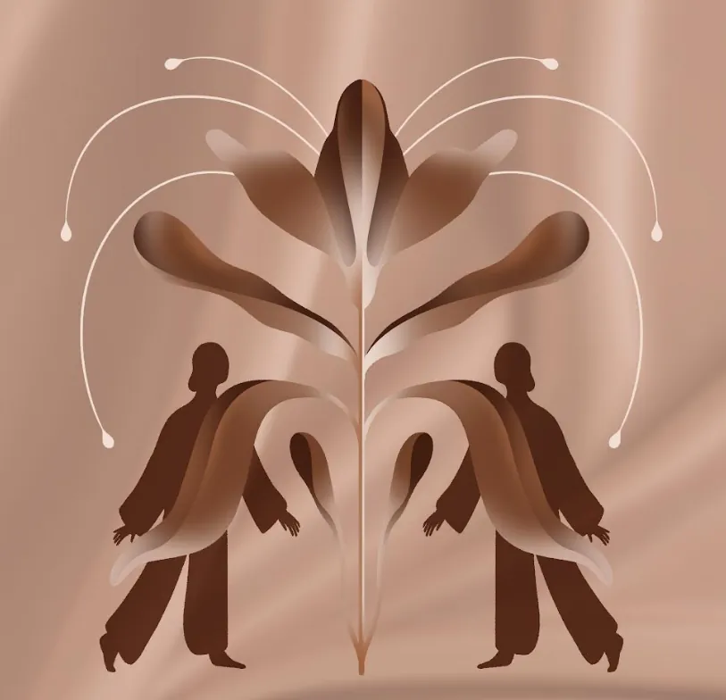
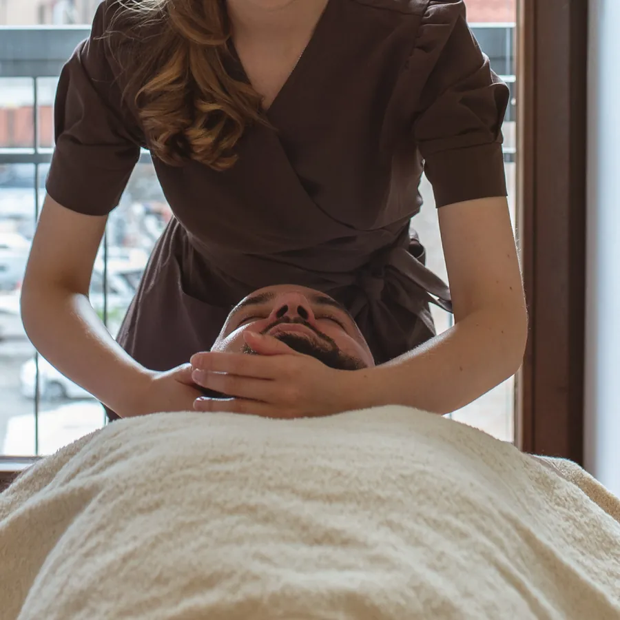
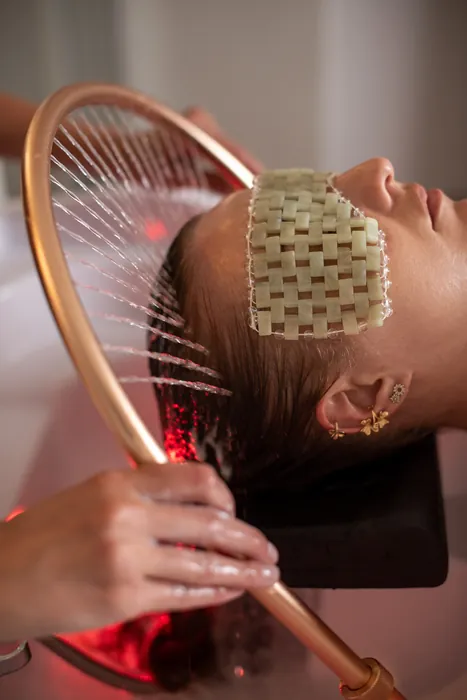
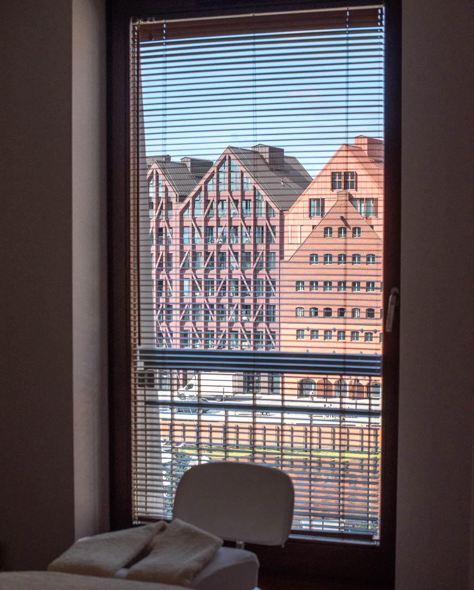
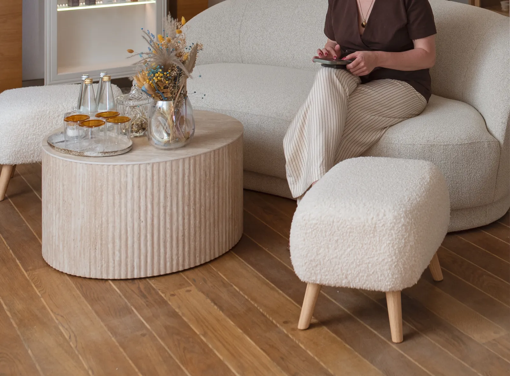
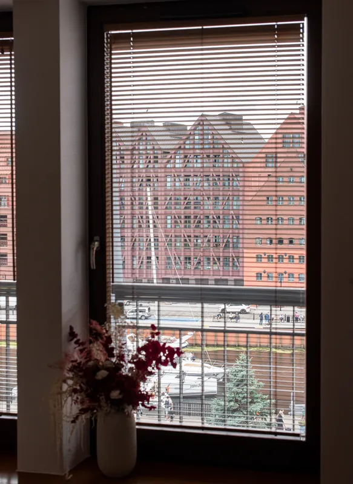
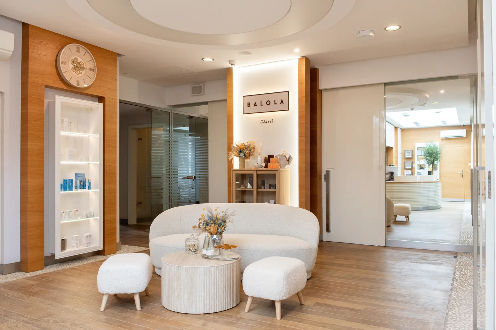
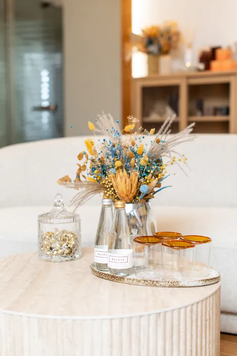
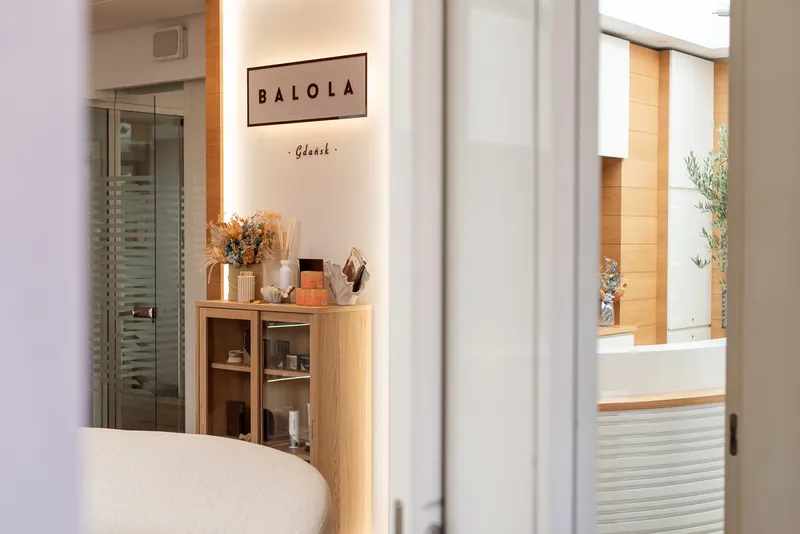
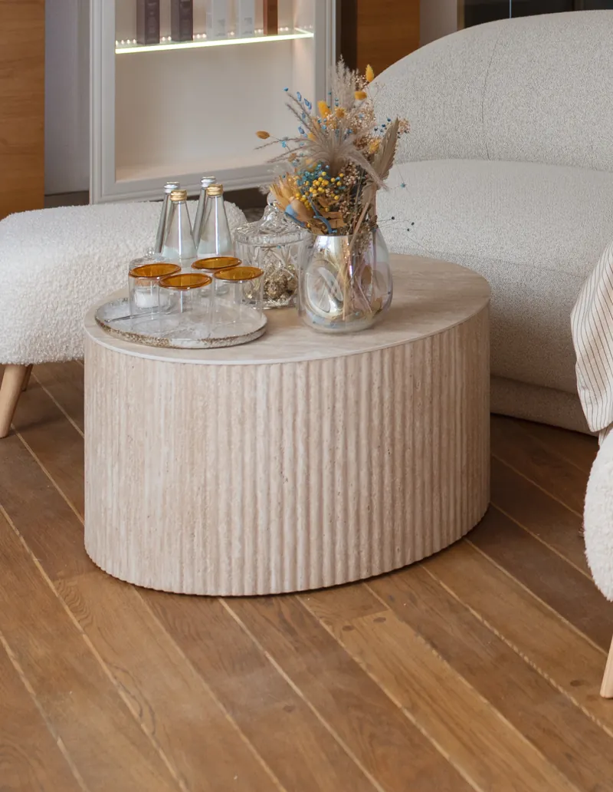

A cosy spa by the Motława · Hotel Gdańsk Boutique, 5th floor
A moment for yourself that stays with you longer
A place for those who want to look better, feel better and slow down, even if just for a moment.
Longevity: caring for yourself for the long run
“Modern skincare, recovery and well-being in the spirit of contemporary longevity.”
At Balola, longevity is not just another treatment category - it is how we work. The aim is for your skin and body to stay in good condition not only after one visit, but for years to come. We combine relaxation and skilled hands with cosmetology and modern technologies.

- RecoveryRest and treatments that support the natural renewal of skin and body.
- Mindful careTreatments matched to your skin and a home routine you can keep up.
- Well-beingCalm, breathing and time for yourself matter as much as the mirror.
New to longevity? Start with a free 30-minute consultation.
More about our philosophyTreatments
From a calm massage to technology-based treatments. Prices come from our Booksy profile, where you can also choose your time.

from 190 złFace and body massages
Relaxing and classic massage, Kobido, foot and facial reflexology.

from 450 złRituals and HeadSPA
Amber and Yuzu for the body, HeadSPA for scalp and hair.
 from 80 zł
from 80 złFacial treatments
Glow & Go, ProXN, Diego dalla Palma, C-Bomb, peels and cleansing.
 from 150 zł
from 150 złLongevity Zone
30-minute rituals: oxygen, hydrogen, LED light, pressotherapy.
 from 120 zł
from 120 złTechnology treatments
ZaffiroLift, Geneo X, LaserMe, InPure and more.
 from 200 zł
from 200 złBody treatments
Sculptorea rituals, Arosha therapies, STORZ shockwave.

Fifth floor, overlooking the Motława
Balola Gdańsk is located in Hotel Gdańsk Boutique at 9 Szafarnia Street. The treatment room windows look out over the Motława and the old granaries, and inside you will find a warm interior of beige and wood. The sea is close by, and the city rush stays outside.
For Tricity locals
A regular place to recharge: treatment series, a skincare plan and regular visits with the same specialists.
For hotel guests
The spa is in the same building. A ritual after your journey or a moment of calm before an evening in town. Booking and service in English.
An interior made for slowing down
Bouclé, pale wood, dried flowers and light from the Motława. Swipe to see more.






What our guests say
„Zabieg bardzo relaksujący i odżywczy. Pan Hubert dokładnie omawiał każdy etap zabiegu, dzięki czemu czułam się zaopiekowana i w pełni komfortowo. Profesjonalne podejście, miła atmosfera i chwila prawdziwego relaksu. Zdecydowanie polecam!”
„Bardzo przyjemny masaż, piękne glow na twarzy, super atmosfera, profesjonalnie i przytulnie. Polecam serdecznie”
„Świetnie wykonany zabieg, Pani Katarzyna sprawiła, że atmosfera podczas zabiegu była przyjemna i czułem się zaopiekowany choć trochę mnie stresował zabieg laserowy. Polecam serdecznie”
Modern solutions for skin, body and well-being, designed for recovery, balance and results that last.
Beauty. Longevity. Deep reset.
12 years of Balola. It all began in Sopot
Balola was founded in Sopot for active, demanding and informed women. Gdańsk is the next chapter of that story, with its own character and treatments, and the same care for results and for how you feel.
About usBooking and directions
Balola GdańskHotel Gdańsk Boutique, 5th floor
9 Szafarnia Street, 80-755 Gdańsk
- Monday10:00-20:00
- Tuesdayclosed
- Wednesday - Sunday10:00-20:00
Hotel Gdańsk Boutique, 5th floor
9 Szafarnia Street, 80-755 Gdańsk
Google Maps is turned off in your cookie settings.